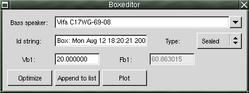

GSpeakers documentation
The BoxEditor
This is a utility where you can edit the enclosure currently selected in the
BoxHistory window.

The box editor window
Howto use the box/enclosure editor
Here you can change the parameters for a box, you can also optimize the enclosure volume
for a specific speaker.
The buttons/entries
Bass speaker: Use this dropdown list to select the speaker you want to work with.
All speakers that are marked as bass speakers in the currently selected speaker list
will be shown in this dropdown list.
Id string: A string to identify a specific enclosure. You can type whatever you want
in this field. Use it for notes or additional information.
Type: This option menu is used to select the type of enclosure you want to work with.
Currently GSpeakers supports sealed and ported enclosures. More enclosure types will follow
later on.
Vb1: Vb1 is the air volume inside the enclosure.
Fb1: Fb1 is the enclosure resonance frequency. For a sealed enclosure this is a fixed
value which you cannot change. However, for a ported enclosure setting the resonance
frequency is part of the design. Press the optimize button to get the optimized enclosure for
a specific speaker. The optimized enclosure will have a very smooth and nice frequency response.
For a ported enclosure you can try to increase or decrease the fb or vb to change the
ferquency response. Play with different values in the vb and fb fields to get a feeling for how
these parameters work together.
Other types of enclosures?
I would like to add more types of enclosures to GSpeakers but it is hard to find information
on how to calculate things for other types of enclosures (the sealed and the ported enclosure are the
most popular type of eclosure). I would also like GSpeakers to be able to more accurately
calculate enclosures for use in car audio systems.
If you know how to calculate other enclosure types, feel free to patch GSpeakers. It should not
be too hard. Just a few changes in the BoxEditor and a few changes in the plot calculations. If you
don't know C++ I can help you implement it.
The buttons
Optmize: Press this button to calculate an enclosure that will give an optimum
frequency response with the currently selected speaker.
Append to list: Press this button to add the current enclosure to the box history.
Plot: Click here to add the enclosure to the box history and also add a new plot.
Daniel Sundberg, dss at home dot se
Index